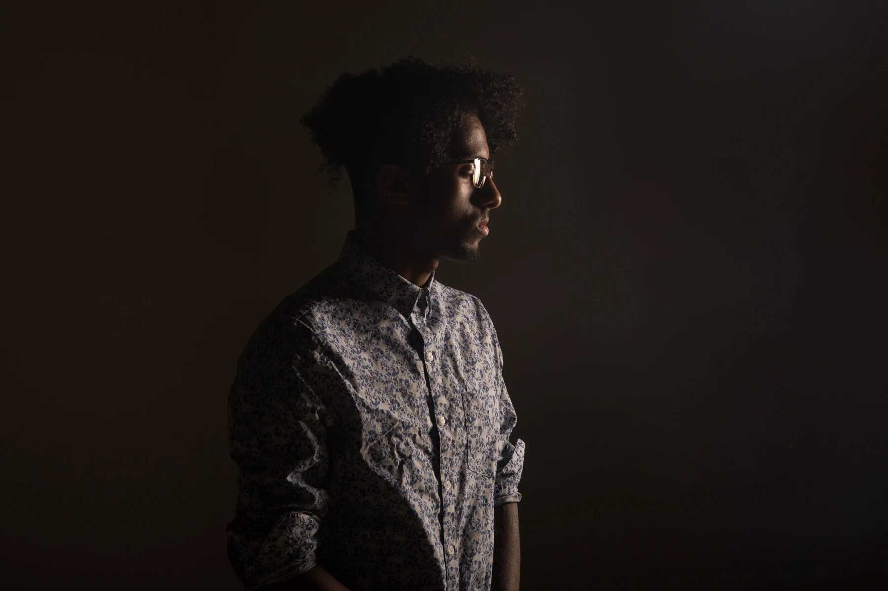
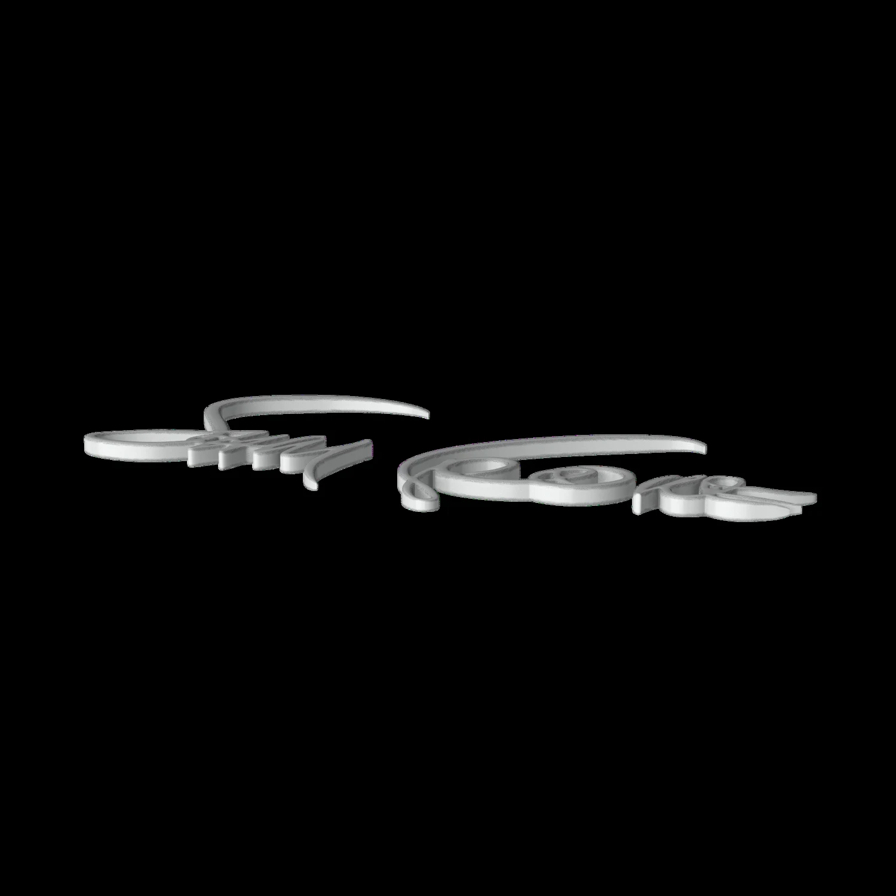

Design that
makes sense.
I turn complex journeys into clear, usable digital experiences — across financial services, commerce, and community-focused products.

Research-led.Carefully crafted.
Selected work
01—04 / RESEARCH TO INTERFACE
Wells Fargo
Making credit card application status and next steps easier to understand.
Read case study

White Pyramid Clothing
An e-commerce redesign connecting a fashion brand’s identity to its digital experience.
Read case study

The Good Neighbor Center
A nonprofit website redesign and companion app concept for parents, volunteers, and donors.
Read case study

Earthnetic
A mobile concept connecting people with environmental events in their community.
Read case study
Creative thinking.
Grounded in people.
I’m Makao, a product and UX designer with four years of experience across web and mobile. My background brings together graphic design, user research, product design, and web development.
I work with content strategists, engineers, and stakeholders to connect people’s needs with a clear design direction. I enjoy the details that make an experience easier to understand — from the structure of a journey to the words on a screen.
More to explore
Concepts & creative practice
Finding your way through the fair.
An AR navigation concept for discovering vendors, stages, and amenities across the fairgrounds.
Selected concept preview.
Exploring form in 3D.
I’m developing my 3D modeling practice alongside product design, exploring objects, surfaces, and visual composition.

Have a role or project in mind?
I’m available for product design, UX/UI opportunities, and freelance collaborations.
day.makao@gmail.com